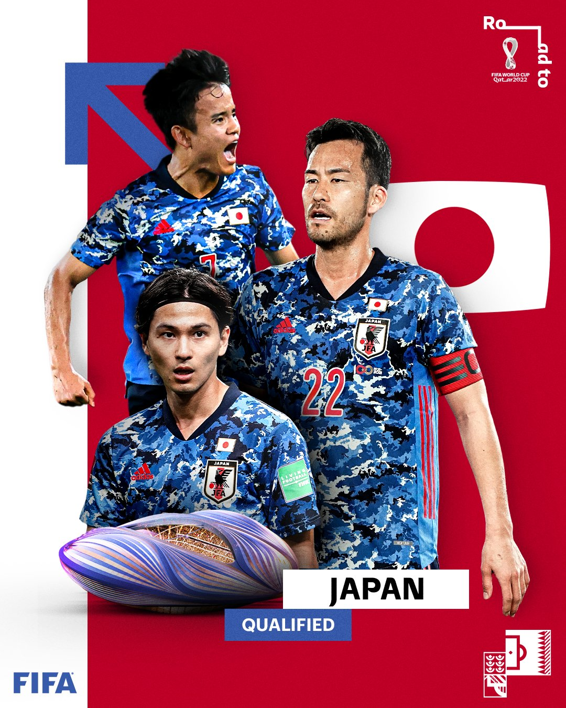

Meilleur joueur
TAKUMI MINAMINO
Les Samouraïs Bleus vont disputer leur septième Coupe du Monde. Parviendront-ils à atteindre leur objectif de longue date, à savoir, atteindre les quarts de finale ?
L'équipe du Japon de football est la sélection de joueurs de football japonais représentant le pays lors des compétitions régionales, continentales et internationales sous l'égide de la Fédération du Japon de football. La sélection du Japon est considérée comme une des équipes les plus importantes d'Asie.
Après avoir lancé un championnat professionnel (J. League) en 1990, le Japon a progressé à pas de géant et a enfin réussi à s'ouvrir les portes de la Coupe du Monde à France 1998. Présents dans toutes les éditions depuis lors, les Samouraïs bleus s'apprêtent à faire leur septième apparition en phase finale.
Si leurs débuts marqués par trois défaites ont mis en évidence un important écart de niveau, ils ont montré un tout autre visage en 2002, année où ils ont co-organisé le tournoi avec la République de Corée. Avec Philippe Troussier à la barre et portés par leur public, ils ont atteint les huitièmes de finale.
Par la suite, ils ont alterné élimination en poules et qualification pour le deuxième tour. En 2006, ils ont fini derniers de leur groupe sans aucune victoire à leur actif, tandis qu'en 2010, ils ont disputé leurs premiers huitièmes hors de leurs bases, avant de s'incliner aux tirs au but. En 2014, ils n'ont empoché qu'un seul point, comme huit ans plus tôt.
À Russie 2018, ils ont de nouveau frôlé les quarts de finale, mais ils ont perdu le huitième face à la Belgique après avoir laissé filer une avance de deux buts.
TAKUMI MINAMINO
Takumi Minamino (南野 拓実), né le 16 janvier 1995 à Izumisano, est un footballeur international japonais. Il évolue au poste d'attaquant ou de milieu offensif à l'AS Monaco.
En décembre 2019, des rumeurs insistantes envoient Minamino au Liverpool FC lors du mercato d'hiver et avancent que les deux clubs seraient parvenus à un accord de principe6,7.
Le 19 décembre 2019, le transfert de Minamino chez les Reds est rendu officiel mais prend effet en janvier 2020. Le montant est estimé à huit millions d'euros, prix de sa clause libératoire8. Il échoit du numéro 18, notamment porté par Michael Owen ou Dirk Kuyt9.

"Le Japon est vraiment incroyable »

Ils ont battus l’Allemagne, ils ont battus l’Espagne et sont en train de malmener la Croatie de Luka Modric. Le Japon est clairement la surprise de cette Coupe du Monde
« avec cette lise on va rien faire ,il faut changer le séléctionneur
La liste des joueurs japonnais est trés mauvaise ,ils ne peuvent meme dépasser la phase de poule »